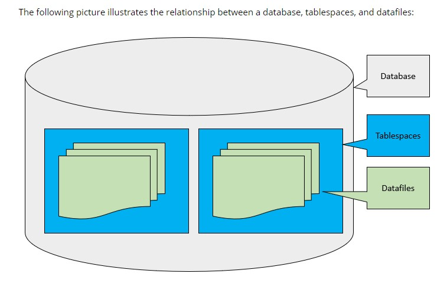

Each tablespace consists of one or more files called datafiles. A datafile physically stores the data objects of the database such as tables and indexes on disk.
In other words, Oracle logically stores data in the tablespaces and physically stores data in datafiles associated with the corresponding tablespaces.
